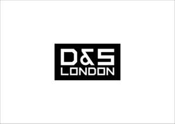

Trade Mark Journal No.2025/031 1 August 2025
UK00004237904 22 July 2025 (6,14,25)

- Class 6
- Lock nuts of metal; Lock boxes of metal; Metal lock boxes; Lock barrels of metal; Locks and keys, of metal; Metal keys for locks; Locking gate hasps of metal; Metal locks for doors; Lock parts of metal; Metal bolts for locking doors; Lock casings of metal; Metal ball lock pins; Bicycle locks; Locks of metal; Spring locks; Cylinder locks of metal; Metal sash locks; Locking pins of metal; Metal locks for windows; Bicycle locks of metal; Metal bicycle locks; Spring locks of metal; Metal locking mechanisms; Snowboard locks of metal; Locks of metal for bags; Metal bump keys for locksmithing; Metal door latches; Locks of metal, other than electric; Locks [other than electric] of metal; Locking oil tank caps of metal; Padlocks; Non-electric locks of metal; Door levers of metal; Locks of metal for handbags; Metallic push button padlocks; Metal gate latches; Locks of metal for vehicles; Spring locks of metal, other than electric; Door friction stays of metal; Door guards of metal; Door holding devices of metal; Metal chain door guards; Striking plates of metal for locks; Door lever furniture of metal.
- Class 14
- Jewelry; Necklaces [jewelry]; Pendants [jewelry]; Bracelets [jewelry]; Brooches [jewelry]; Jewelry brooches; Brooches being jewelry; Jewelry (Paste -) [costume jewelry]; Paste jewelry [costume jewelry]; Necklaces [jewellery, jewelry (Am.)]; Bracelets [jewellery, jewelry (Am.)]; Jewelry stickpins; Ornaments [jewellery, jewelry (Am.)]; Necklaces [jewellery]; Trinkets [jewelry]; Trinkets [jewellery, jewelry (Am.)]; Diamond jewelry; Amulets [jewelry]; Brooches [jewellery, jewelry (Am.)]; Pearls [jewelry]; Lockets [jewelry]; Pearls [jewellery, jewelry (Am.)]; Amulets [jewellery, jewelry (Am.)]; Cloisonné jewellery [jewelry (Am.)]; Charms [jewelry]; Jewelry charms; Charms for jewelry; Costume jewelry; Rings [jewelry]; Charms [jewellery, jewelry (Am.)]; Rings [jewellery, jewelry (Am.)]; Jewellery; Medallions [jewellery, jewelry (Am.)]; Clasps for jewelry; Lockets [jewellery, jewelry (Am.)]; Chains [jewellery, jewelry (Am.)]; Cloisonné jewelry; Bracelets [jewellery]; Jewelry hatpins; Ivory [jewellery, jewelry (Am.)]; Pins [jewellery, jewelry (Am.)]; Jewelry caskets; Shoe jewelry; Pendants [jewellery]; Platinum jewelry; Paste jewellery [costume jewelry (Am.)]; Paste jewellery [costume jewelry [Am.]]; Crucifixes as jewelry; Jewelry chains; Chains [jewelry]; Ornaments [jewellery]; Jewelry boxes; Ivory jewelry; Pins being jewelry; Pins [jewelry]; Cameos [jewelry]; Silver thread [jewellery, jewelry (Am.)]; Gold thread [jewellery, jewelry (Am.)]; Beads for making jewelry; Pet jewelry; Cabochons for making jewelry; Wire of precious metal [jewellery, jewelry (Am.)]; Trinkets [jewellery]; Rhinestones for making jewelry; Identification bracelets [jewelry]; Brooches [jewellery]; Jewellery brooches; Hat jewelry; Imitation jewelry; Threads of precious metal [jewellery, jewelry (Am.)]; Jewelry for pets; Jewellery, including imitation jewellery and plastic jewellery; Items of jewellery; Jewellery items; Jewellery chain of precious metal for necklaces; Rings being jewellery; Rings [jewellery]; Amulets being jewellery; Amulets [jewellery]; Costume jewellery; Charms [jewellery]; Charms for jewellery; Jewellery charms; Identification bracelets of precious metal [jewelry]; Jewelry boxes of metal; Pearls [jewellery]; Jewelry findings; Lockets [jewellery]; Wristlets [jewellery]; Agate as jewellery; Cloisonne jewellery; Plastic bracelets in the nature of jewelry; Jade [jewellery]; Leather jewelry boxes; Fashion jewellery; Pewter jewellery; Amber pendants being jewellery; Jewelry for the head; Jewellery caskets; Gold jewellery; Decorative brooches [jewellery]; Scarf clips being jewelry; Paste jewelry; Jewelry cases; Cloisonné jewellery; Amberoid pendants being jewellery; Jewellery chain of precious metal for bracelets; Jewelry boxes of precious metals; Clasps for jewellery; Jewelry caskets of precious metal; Bracelets made of embroidered textile [jewelry]; Shoe jewellery; Jewelry boxes of precious metal; Silver thread [jewelry]; Jewellery stones; Women's jewelry; Jewellery in semi-precious metals; Children's jewelry; Musical jewelry boxes; Gold thread jewelry; Gold thread [jewelry]; Plastic costume jewellery; Wire of precious metal [jewelry]; Jewellery products; Beads for making jewellery; Crucifixes of precious metal, other than jewelry; Jewellery for personal adornment.
- Class 25
- T-shirts; Short-sleeved T-shirts; Printed t-shirts; Tee-shirts; Turtleneck shirts; Long-sleeved shirts; Short-sleeved shirts; Shirts; Short-sleeve shirts; Dress shirts; Knit shirts; Open-necked shirts; Mock turtleneck shirts; Corduroy shirts; Camouflage shirts; Bib shorts; Casual shirts; Sweat shirts; Hooded sweat shirts; Collared shirts; Button-front aloha shirts; Polo shirts; Sweatshirts; Aloha shirts; Yoga shirts; Woven shirts; Shorts [clothing]; Sleeveless jerseys; Sweatpants; Shirt yokes; Yokes (Shirt -); Shirts and slips; Night shirts; Maternity shirts; Football shirts; Soccer shirts; Moisture-wicking sports shirts; Shirt fronts; Golf shirts; Shirts for suits; Jeans; Fleece shorts; Wristbands [clothing]; Pique shirts; Sleep shirts; V-neck sweaters; Sport shirts; Bib tights; Sports shirts; Boy shorts [underwear]; Embroidered clothing; Ramie shirts; Tennis shirts; Denim pants; Hoodies; Hooded sweatshirts; Fishing shirts; Denim jeans; Under shirts; Rugby shirts; Sports shirts with short sleeves; Trousers shorts; Shorts; Leggings [trousers]; Jerseys [clothing]; Blue jeans; Bibs, sleeved, not of paper; Dress pants; Hunting shirts; Nappy pants [clothing]; Padded shirts for athletic use; Sleeveless jackets; Tank-tops; Sleeveless pullovers; Turtleneck sweaters; Sweat shorts; Bib overalls for hunting; Denims [clothing]; Sweatshorts; Button down shirts; Men's dress socks; Sleeved jackets; Turtleneck pullovers; Camouflage pants; Beanie hats; Knitted underwear; Mock turtleneck sweaters; Gym shorts; Corduroy pants; Pants; Bandanas; American football shirts; Headbands [clothing]; Headbands for clothing; Maternity shorts; Pirate pants; Hats (Paper -) [clothing]; Paper hats [clothing]; Moisture-wicking sports pants; Denim jackets; Swim shorts; Sweat pants; Wristbands; Babies' pants [clothing]; Golf shorts; Knitted clothing; Warm-up pants; Babies' pants [underwear]; Underwear; Shoes for casual wear; Capri pants; Polo sweaters; Undershirts; Quilted jackets [clothing]; Turtleneck tops; Sweat-absorbent underwear; Jackets (Stuff -) [clothing]; Stuff jackets [clothing]; Cycling shorts; Bandanas [neckerchiefs]; Boxer shorts; Men's underwear; Knit jackets.
D & S LONDON LTD